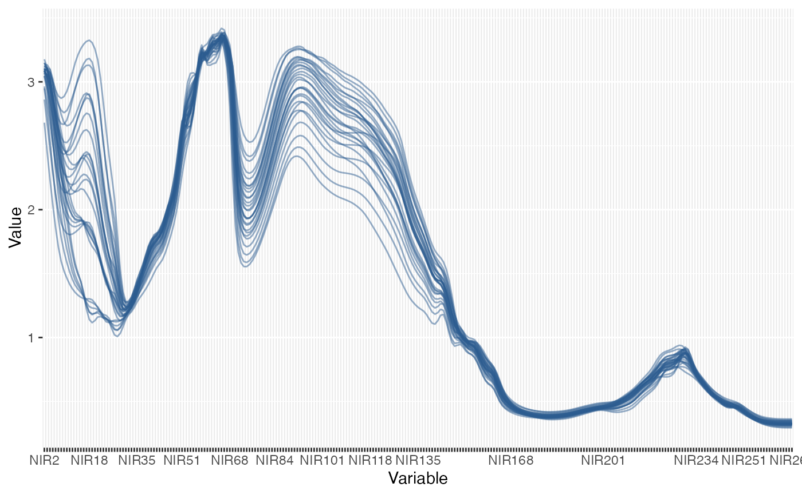

Raw Data Plot Panel for mvr Models
Usage
gg_rawdataplot(
object,
type = c("boxplot", "line", "violin"),
jitter_width = 0.2,
alpha = 0.5,
angle = 0,
check_overlap = TRUE,
max_ticks = 12L,
plotly = FALSE
)Arguments
- object
An mvr model object, matrix, or data.frame.
- type
Character. One of "boxplot", "line", or "violin".
- jitter_width
Numeric width for point jitter in boxplot/violin modes.
- alpha
Numeric transparency for observations.
- angle
Numeric. Angle (0 to 90) to rotate x-axis labels. Default is 0.
- check_overlap
Logical. If TRUE, automatically suppresses overlapping x-axis labels.
- max_ticks
Integer. Maximum number of tick labels to show when `plotly = TRUE`.#' @param plotly Logical. If TRUE, returns a Plotly widget.
Examples
data(yarn)
mod <- plsr(density ~ NIR, ncomp = 6, data = yarn, validation = "CV")
if (requireNamespace("ggplot2", quietly = TRUE)) {
gg_rawdataplot(mod, type = "line")
}
